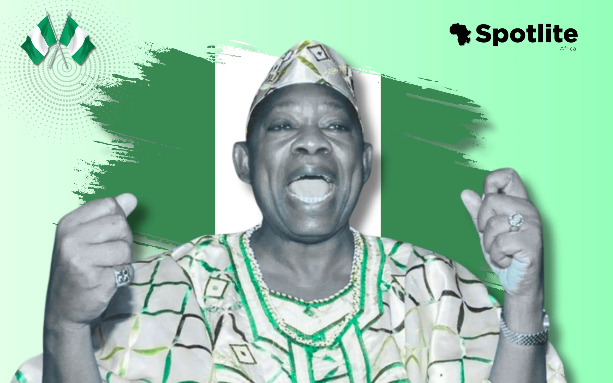
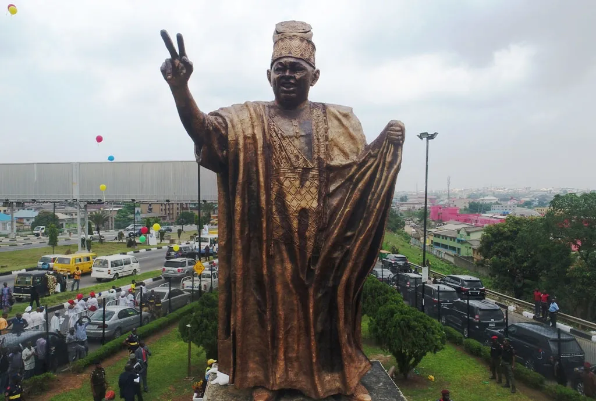

MKO Abiola: The Man Who Dared to Dream for a Nation
Some names are written in ink, others in blood, but then, a rare few are etched into the very soul of a nation. Moshood Kashimawo Olawale Abiola, or as we fondly know him, MKO, was more than just a man. He was a movement. A meteor that lit up Nigeria’s darkest skies with hope, justice, and a kind of patriotism that danced on the borders of martyrdom.
If life were a stage, MKO didn’t just perform, he rewrote the script. A titan in business, a lion in politics, and a river in philanthropy, he didn’t wait for flowers. He tilled the soil, planted the seeds, watered the fields, and left behind a blooming garden of impact, justice, and legacy.
The Changemaker’s Genesis
Born in the dusty streets of Abeokuta in 1937, MKO’s journey was never paved in gold. But isn’t that where true greatness begins, in obscurity? From hawking firewood at nine to bagging scholarships and making waves in global finance, MKO showed that diamonds don't form in daylight; they’re born under pressure.
He rose through the ranks, became the general manager of ITT, and amassed wealth, but wealth, for him, was never the endgame. It was merely the ink with which he planned to rewrite Nigeria’s story.

His Crowning Glory: The June 12 Revolution
.webp)
Let’s not mince words, June 12, 1993, was not an election. It was a revolution disguised as democracy. Nigerians, tired of the old guard, stood in line for hours, hearts beating like war drums, to vote for a man who spoke their language, the language of hope.
MKO didn’t win that election. He conquered it. North, South, Christian, Muslim, the people cast away tribal cloaks and voted for one Nigeria. That day, MKO became the first and only man to unite a deeply divided nation with just the promise of change.
But power is a jealous lover. The military junta, threatened by this rising sun, annulled the results, and the nation was plunged into darkness again. Yet MKO didn’t flinch. He declared himself president. He was arrested. And he died, not as a man defeated, but as a symbol risen.
The Man Who Gave Until It Hurt
.webp)
While politicians padded their pockets, MKO was out there building schools, funding scholarships, feeding the poor, and offering lifelines to the dying dreams of the common man. Over 100 educational institutions bear the fingerprints of his philanthropy. Thousands owe their degrees, their careers, their destinies to him, not because he had to, but because he wanted to.
He believed in the power of education like a preacher believes in salvation. He didn’t just write cheques; he wrote futures.
And oh, did he love people! He was one of them. You’d find him at Oja-Oba in Ibadan or sitting with Alhajis in Kano, listening, truly listening, to their plights. He didn’t build walls of class; he built bridges of compassion.
Legacy: The Flame That Refused to Die
They say a candle loses nothing by lighting another. MKO didn’t just light candles, he set souls on fire. His death in 1998 didn’t bury his dream; it fertilized it. Today, June 12 is Nigeria’s Democracy Day, an official recognition that though tyrants may silence a voice, they cannot silence an idea whose time has come.
His life taught us that courage is not the absence of fear, but the ability to stand even when your knees beg you to fall. He gave everything. Money. Reputation. Freedom. Life. And for what? A dream. A Nigeria where justice flows like water and equity like a mighty stream.
Giving Him His Flowers
This is a call, not a eulogy. MKO Abiola is not just part of our past, he is a mirror for our future. In a world full of talkers, he was a doer. In a land where many wait for light, he chose to be the thunder that breaks the sky and lets the rain pour.
He deserves more than dusty textbooks and faded photos. He deserves his face on murals, his story on stages, his legacy in the hearts of every child who dares to dream.
So here’s to MKO, the man who chased a nation’s dream until it chased him back.
To the New Breed of Changemakers
Are you watching, young dreamers? The baton wasn’t buried with him. It was passed, to you. Yes, you, with the fire in your eyes and the ache in your heart to make things better. You don’t need a throne to rule; you need a cause. You don’t need a million naira to start; just one good deed and the courage to keep going.
Let MKO remind you: You’re not too small. The dream is not too big. The time is not tomorrow, it’s now. So rise, and let your life be the thunder that echoes his storm.
Spotlite Africa gives MKO Abiola his flowers, not out of obligation, but out of reverence. Because heroes live forever, when we remember.